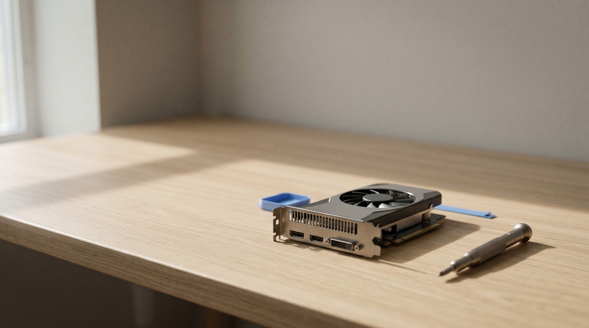

How to install IndexTTS2 on Windows: the uv steps, the DeepSpeed skip, and what a small graphics card switches off
If you want to install IndexTTS2 on Windows, copy the index-tts folder from GitHub, install uv, and run uv sync --extra webui inside that folder. Doing it that way skips DeepSpeed, which is the part that usually breaks on Windows, while uv downloads Python 3.11 and the NVIDIA version of PyTorch on its own. After that, download the IndexTTS-2.5 model, which is about 5.5 GB, into a folder called checkpoints and launch the app with uv run webui.py.
| IndexTTS-2.5 from GitHub | IndexTTS-2, the older model | VoiceClone | |
|---|---|---|---|
| Download size | About 5.5 GB of model files | About 5.9 GB of model files | About 1.3 GB, fetched by the app on first start |
| Languages | Chinese, English, Japanese, Spanish and Arabic | Chinese and English | English |
| Python setup | uv does it, from the command line | uv does it, from the command line | None |
| How it starts | uv run webui.py | uv run webui.py --version 2 --model_dir ./checkpoints_2 | Double click START VoiceClone.bat |
| On a graphics card under 10 GB | Half precision turns on and emotion from a text description is switched off | Half precision turns on and emotion from a text description is switched off | Works, and a normal processor works too, only slower |
| How it copies your voice | From one reference clip, no training | From one reference clip, no training | Trained on 1 to 3 minutes of your talking |
| Cost | Free, under the bilibili Model Use License | Free, under the bilibili Model Use License | Free to clone and train one voice, then $49 one time |
Written by Inam. VoiceClone in the last column is my own app and it runs on another engine than IndexTTS2, so weigh that column with that in mind. You can find my other engineering work on designesh.com. Last updated 26 November 2026.
You probably saw a clip of IndexTTS2 copying a voice from one short recording and making it sound angry or sad, and now you want to run it on your own Windows PC. When you check the GitHub page, the setup looks quick because there are only three or four commands. On Windows though, that first command often stops with a wall of red error text, and even after you get it running, the web page does not behave quite the way most guides describe.
On Windows, run uv sync --extra webui without --all-extras, download IndexTTS-2.5 into the checkpoints folder, and start it with uv run webui.py --host 127.0.0.1. Those two small adjustments get you past the DeepSpeed error and keep the web page locked to your own computer. I will walk through every step below, and then show you two details I spotted in the code that the usual install guides leave out.
What do you need before you install IndexTTS2?
You actually need less on your PC than most guides suggest, because a tool called uv handles the heavy lifting. uv is an installer made for Python projects, and the IndexTTS README on GitHub says you have to use it if you want a clean install. You do not need to set up Python or PyTorch by hand, because the project settings ask for Python 3.10 or 3.11 and pin version 3.11.13, so uv pulls that exact version right into the project folder.
That keeps the list of what you need fairly short. You need git, which is the program that downloads code from GitHub, and you need uv. You also need an NVIDIA graphics card with a current driver, plus about 15 GB of free space on your drive for the model, the Python packages, and a few small extra files. That 15 GB number is my own estimate based on the file sizes, since the README does not list a disk requirement.
Out of everything on that list, your graphics card matters the most. The README never states a minimum amount of graphics memory, which people call VRAM. When I checked the code for the web page, though, it draws a clear line at 10 GB, and I cover what happens if your card has less than that in a section below.
How do you install IndexTTS2 on Windows, step by step?
Open Windows Terminal or Command Prompt, switch to the drive where you normally keep your projects, and run these commands in order. Every single one comes straight from the README, and I only adjusted the third command so it works properly on Windows.
- Download the code:
git clone https://github.com/index-tts/index-tts.gitand then runcd index-ttsto move into that folder. - Install uv: run
pip install -U uvif Python is already on your machine, or use the installer from the uv install page if it is not. - Install the packages: run
uv sync --extra webui. This makes a folder called .venv inside the project and installs Python along with all the required packages there. - Install the download tool: run
uv tool install "huggingface-hub". That adds a command called hf to your terminal. - Download the model: run
hf download IndexTeam/IndexTTS-2.5 --local-dir=checkpoints. It pulls down 22 files that come to about 5.5 GB. - Check your graphics card: run
uv run tools/gpu_check.py. This prints out the cards that PyTorch can detect. - Start the page:
uv run webui.py --host 127.0.0.1and openhttp://127.0.0.1:7860in your browser.
There is one habit from other Python tools that will trip you up here. The README explains that every uv command turns on the project's own environment by itself, and it warns you not to activate any environment manually first because that can lead to package conflicts. Just skip the activate command completely, and do not run these steps inside a conda prompt.
Expect the first launch to take longer than the ones after it. According to the README, a few small models download automatically the first time you run the app, and the example audio files get fetched on that first start too. Leave your internet connection on for that first run, even though the main model is already sitting on your drive.
Why does uv sync --all-extras fail on Windows?
The command in the README is uv sync --all-extras, which tries to install every optional piece at once. One of those pieces is DeepSpeed, a library meant to speed things up, and the README itself warns that DeepSpeed may be difficult to install on Windows. Once it fails, you get a long build error and the whole install stops before the rest of the packages finish.
The README's fix is to drop the --all-extras flag and only ask for the parts you actually want. Inside the settings file, pyproject.toml, there are four optional parts listed: webui, deepspeed, accel, and torch_compile. You only need webui to open the page in your browser, which is why step 3 uses --extra webui by itself.
Skipping DeepSpeed does not cost you much. The README says it may speed up inference on some systems and could actually make it slower on others, depending on your hardware and drivers. Inference is just the step where your computer generates the audio, so it makes more sense to start without DeepSpeed and only come back to it later if the speed bothers you.
Do you have to install the CUDA build of PyTorch yourself?
No, and this is one area where IndexTTS2 is simpler than a lot of other models. CUDA is NVIDIA's software for running AI on its graphics cards, and PyTorch is the library that actually runs the model. With many projects, pip quietly gives you a version of PyTorch that only uses your processor, and you end up having to fix it by hand, which is a trap I covered in my guide on how to install VibeVoice on Windows.
In this project, the settings file takes care of it for you. It pins PyTorch 2.8 and tells uv to pull it from the PyTorch download folder for CUDA 12.8 on both Windows and Linux. Once uv sync finishes, you already have the graphics card build ready to go without doing anything extra.
If a CUDA error still pops up while you are installing, the README says to check that you have NVIDIA's CUDA Toolkit version 12.8 or newer on your system. Step 6, where you run the gpu_check script, is how you make sure everything wired up properly. As long as that script lists your NVIDIA card, the install is using it.

What does a graphics card under 10 GB change?
This is the first detail I noticed in the code that the guides do not mention. When the web page starts up, webui.py checks how much memory is on your graphics card. If it sees less than 10 GB, it makes two changes on its own and prints one line in the terminal to tell you.
First, it switches on half precision, which stores the numbers inside the model in a smaller form. The README says this runs faster and uses less VRAM with very small quality loss, so that part is fine. Second, it skips loading the emotion model altogether, and the terminal prints a note saying that emotion control from a text description is unavailable.
What that means is that on an 8 GB card you can still clone a voice and control the emotion using a second audio clip or the sliders. Typing a description like "sounds scared" will not work unless you start the page with the --qwen_emo option, which forces the emotion model to load. The help text for that option confirms that the model is skipped by default on a low VRAM card. If your card has less than 10 GB and the text emotion box does nothing, your install is fine and this default check is why.
I did not run IndexTTS2 on my own machine tonight, so I cannot say for sure whether an 8 GB card has enough room once you force that model to load. I can only tell you what the code is written to do, because I went through it on 26 November 2026.
Why should you add --host 127.0.0.1 when you start it?
Here is the second thing I found in the code. The README tells you to open http://127.0.0.1:7860 in your browser, which is an address that means "this PC only". In webui.py, though, the default host setting is 0.0.0.0, which tells the page to listen on every network connection your computer has.
In plain words, another phone or laptop on the same Wi-Fi may be able to open your IndexTTS2 page by typing your PC's address, assuming your firewall lets it through. At home that is usually harmless. If you are in a shared flat, an office, or a hostel, other people on the network might be able to make audio using the voice clips you loaded.
Running the page with uv run webui.py --host 127.0.0.1 closes that gap, and nothing changes about how it works for you. The --share option that creates a public link is turned off by default, so the page stays off the internet unless you turn that option on yourself.
Which model should you download, IndexTTS-2 or IndexTTS-2.5?
Download IndexTTS-2.5 unless you have a specific reason to use the older version. The README notes that the team released it on 10 August 2026, and it adds Japanese, Spanish, and Arabic to Chinese and English while running faster inference than IndexTTS-2. The web page also opens in 2.5 mode by default and looks for the model files inside a folder named checkpoints.
That default setting is what catches people when they follow older guides. A lot of guides were written for IndexTTS-2 and tell you to download IndexTeam/IndexTTS-2 straight into the checkpoints folder. The README now places that older model in a separate folder called checkpoints_2 and launches it with uv run webui.py --version 2 --model_dir ./checkpoints_2.
Both models take up almost the same amount of space, so disk space does not decide it. The IndexTTS-2.5 files on Hugging Face add up to about 5.5 GB, while the IndexTTS-2 files come to about 5.9 GB. In both versions, the largest single file is named gpt.pth and takes up over 3 GB.
Where does your own voice go once it is running?
You do not need to copy any audio files into project folders by hand. The web page has a voice reference box where you upload an audio clip, or you can pick one of the example voices it downloaded earlier. From there, you just type your text, press generate, and the model speaks the text in the voice from that clip.
This works as a zero shot copy, which simply means the model skips any training step. That makes it quick to try, though one clip carries less of your accent and rhythm than a model trained on a few minutes of your speech. I already covered the licence, the emotion options, and how it compares in my IndexTTS2 voice cloning article, so I will not repeat all of that here.
Please only load a clip of your own voice, or a voice where the owner gave you clear permission.
When is this install not worth your evening?
It is worth setting up if you want emotion control or need one of the five languages, and you are comfortable working in a terminal. The project is busy as well. Tonight the GitHub page shows 25,314 stars and 422 open issues and pull requests, so when something breaks, you are usually not the first person to run into it.
If all you want is your own English voice reading your scripts, this setup is probably not worth the trouble. That is why I built VoiceClone, a desktop app for Windows 10 and 11 that runs GPT-SoVITS, which is a different engine. You double click START VoiceClone.bat, record 1 to 3 minutes of normal talking, and the app trains the voice right on your own PC, fully offline with nothing uploaded. An NVIDIA card makes it faster, but a regular processor works too.
The free version clones and fully trains one voice and gives you 3 generations to test it, and the $49 one time license opens the rest. To be fair, IndexTTS2 does things my app does not offer, like emotion sliders, five languages, and a copy from one clip with no training. If you need those, do the install above. If you only want your own voice with no setup, use an app.
FAQ
Does IndexTTS2 work on Windows?
Yes, you can install it from the command line using uv, and the settings file downloads the NVIDIA build of PyTorch for Windows on its own. Because the README warns that DeepSpeed may be difficult to install on Windows, run uv sync --extra webui to skip it.
How much VRAM does IndexTTS2 need?
The README does not give a minimum. In the web page's code, any graphics card with less than 10 GB is treated as low memory, so it turns on half precision and skips the emotion model that reads text descriptions. If you want to force that model to load anyway, you can use the --qwen_emo option.
Do I need to install Python first for IndexTTS2?
No, you do not. uv downloads the exact Python version the project pins, which is 3.11.13, and keeps it inside the project folder. You only need Python already on the PC if you want to install uv itself with pip.
How big is the IndexTTS2 download?
The IndexTTS-2.5 model on Hugging Face is 22 files and comes to about 5.5 GB, while the older IndexTTS-2 model is about 5.9 GB. On top of that, you also have the Python packages and a few small models that download on first run.
Sources: the index-tts README, pyproject.toml, webui.py and the repository page on GitHub, and the IndexTeam IndexTTS-2.5 and IndexTTS-2 file lists on Hugging Face, all read on 26 November 2026, plus the VoiceClone product page on myvoiceclones.com.
Hear your own voice come back.
The free Windows app clones and fully trains one voice, yours, on your own PC. No account, no upload, and the download starts right away.